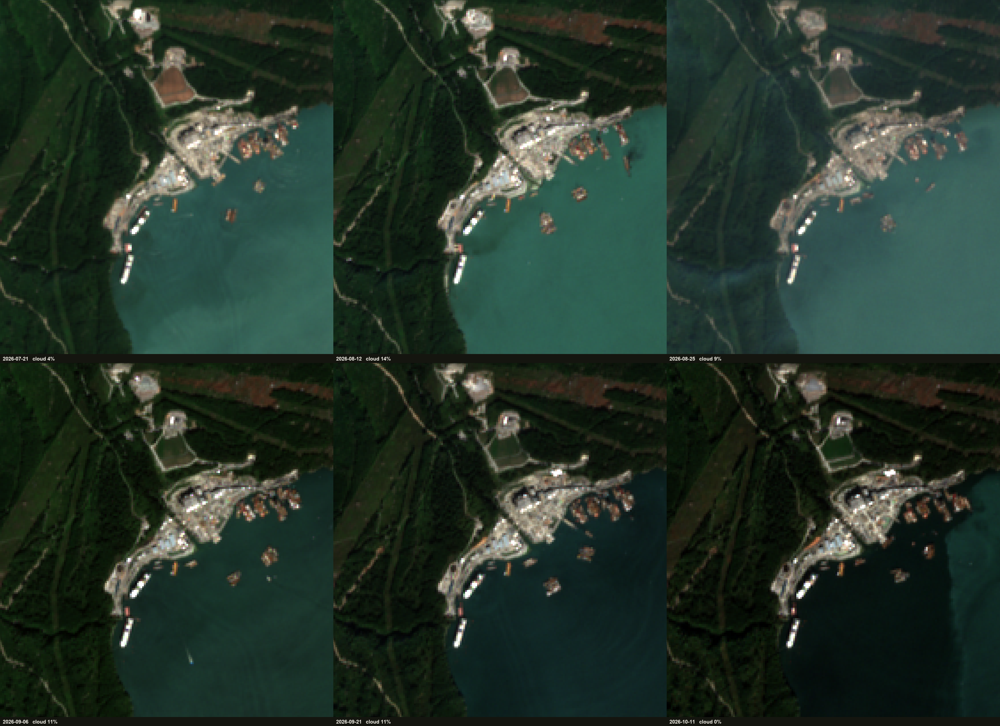
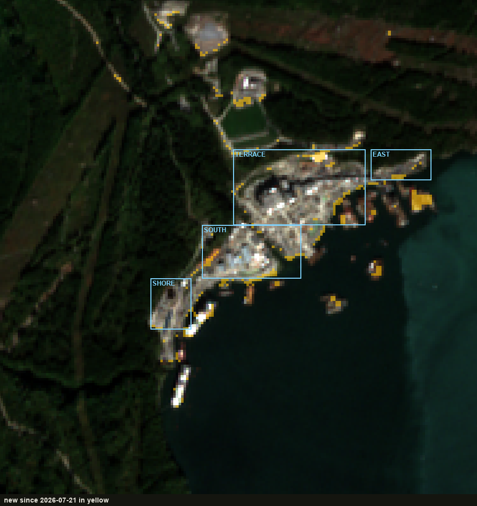
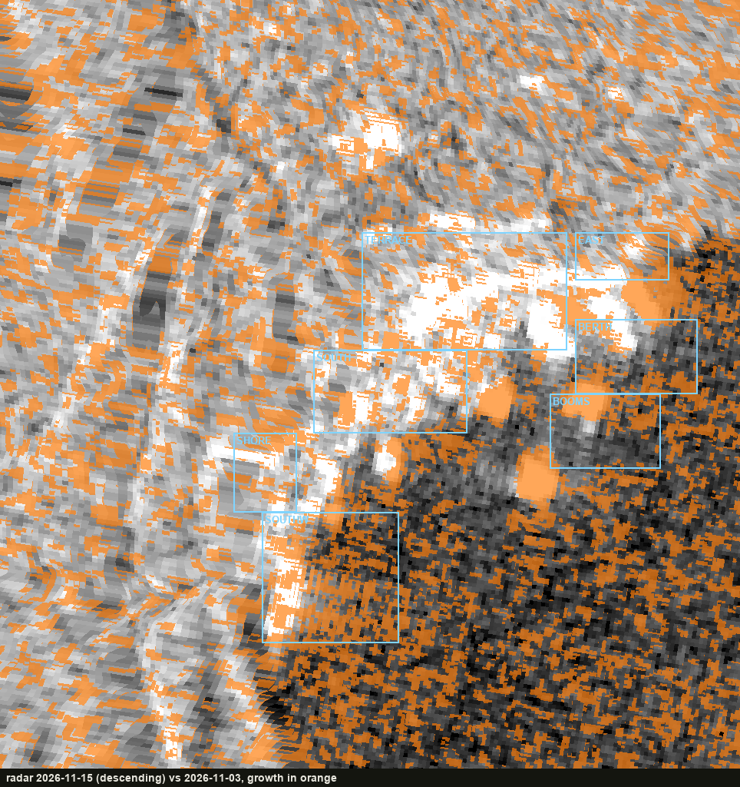

Howe Sound, Squamish, British Columbia, Canada · 49.6654, -123.2537 · page built 2026-11-26 10:51 UTC
Construction progress read from public satellite imagery and radar. Every number below carries its date, and where a source failed the page says so instead of showing a quiet week. The same read can be run on any asset you name.
| What | Figure | Source |
|---|---|---|
| Capacity, initial | 2.1 million tonnes a year | Rigzone, 17 Nov 2026 |
| Capacity, target after debottlenecking | 2.5–2.6 million tonnes a year | Rigzone, 17 Nov 2026, on the federal funding |
| Construction progress | about three quarters complete, as stated by the BC premier-designate | Rigzone, 17 Nov 2026 |
| First LNG | expected late 2027 | Rigzone, 17 Nov 2026 |
| Owners | Pacific Energy Corp (Canada) 70%, Enbridge 30% | Rigzone, 17 Nov 2026 |
| Federal support | CAD 200 million announced by Natural Resources Canada | Rigzone, 17 Nov 2026 |
| Storage | two LNG carriers being converted into floating storage and offloading units at Qingdao Beihai, contracted by McDermott | Global Energy Monitor, Woodfibre LNG Terminal |
| Workforce housing | accommodation vessel moored at the site | Global Energy Monitor, Woodfibre LNG Terminal |
Only passes with cloud below 15% over the site are used, spread over time so that change is visible rather than noise. Passes shown: 2026-07-21 (4% cloud), 2026-08-12 (14% cloud), 2026-08-25 (9% cloud), 2026-09-06 (11% cloud), 2026-09-21 (11% cloud), 2026-10-11 (0% cloud).

dropped Passes rejected for cloud: 2026-11-25 (99%), 2026-11-23 (100%), 2026-11-20 (24%), 2026-11-17 (38%), 2026-11-15 (92%), 2026-11-13 (100%) and more. Howe Sound is a wet place; this is normal and it is why the radar section below exists.
Yellow marks ground that reads as built — concrete, fill, steel — on 2026-10-11 and did not on 2026-07-21. Blue boxes are the zones counted in the table. Measured at 10 m per pixel, so a module shows and a pipe spool does not.

| Zone | Built-up share, pass by pass | Change | New built area |
|---|---|---|---|
| TERRACE Main terrace — former mill platform | 66% → 69% → 65% → 61% → 62% → 57% | -9.4 pp | 192 900 m² |
| EAST East arm — wharf and laydown | 41% → 34% → 33% → 34% → 32% → 29% | -12.4 pp | 35 500 m² |
| SOUTH South yard | 71% → 74% → 76% → 66% → 71% → 69% | -2.0 pp | 106 500 m² |
| SHORE South-west shore and dock | 67% → 66% → 68% → 64% → 63% → 58% | -9.0 pp | 23 400 m² |
Total new built area across the zones between 2026-07-21 and 2026-10-11: 358 300 m².
Radar ignores cloud and darkness, so it answers the weeks the camera misses. It sees metal and corners well: a module, a crane, a hull give a bright return. It sees no colour and nothing inside a building. Latest radar pass 2026-11-15 (descending orbit), compared with 2026-11-03 on the same orbit.

| Zone | Median VV | Bright targets | Change vs pair | New bright area |
|---|---|---|---|---|
| TERRACE Main terrace — former mill platform | -2.4 dB | 62% | +0.9 dB | 777 000 m² |
| EAST East arm — wharf and laydown | -6.0 dB | 38% | +1.2 dB | 119 400 m² |
| SOUTH South yard | -3.4 dB | 56% | +1.2 dB | 507 100 m² |
| SHORE South-west shore and dock | -5.5 dB | 35% | +0.7 dB | 129 800 m² |
| BERTH Water off the east arm | -13.3 dB | 17% | +0.1 dB | 164 200 m² |
| BOOMS Booms and barge water | -15.5 dB | 10% | -0.3 dB | 137 800 m² |
| SOUTHW Southern approach | -13.5 dB | 22% | +3.4 dB | 352 100 m² |
Bright target means a return above -4.0 dB — in practice steel or a flat surface square to the beam. Only passes on the same orbit direction are compared, because the same yard looks different from ascending and descending tracks.
Public optical imagery is 10 m per pixel: it shows surfaces changing, not deliveries. A transformer or a chiller arriving on a truck is a sub-metre object and needs a tasked high-resolution image of that exact spot, bought per scene. Nothing inside a building is visible from orbit at any resolution, and nothing here says anything about price or contract terms.